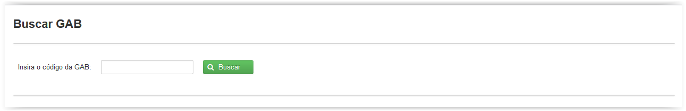
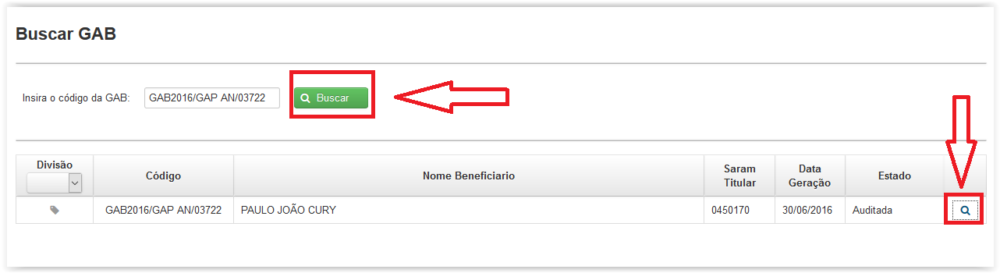

É necessário inserir o código da GAB e clicar em 'Buscar'. Caso a GAB esteja no estado "Em Auditoria" ou "Auditada",será possível visualizar os dados da GAB clicando no botão 'Visualizar' ).
).

Ao clicar no botao  é possível visualizar informações do item de GAB, conforme mostrado abaixo:
é possível visualizar informações do item de GAB, conforme mostrado abaixo:


Ao clicar na aba "Auditoria Prospectiva" o usuário tem a visualização das informações de Auditoria Prospectiva da GAB, conforme abaixo:

Ao clicar na aba "Dados da Solicitação" o usuário tem a visualização das informações da Solicitação de Procedimento que originou a ARE pesquisada, conforme abaixo: